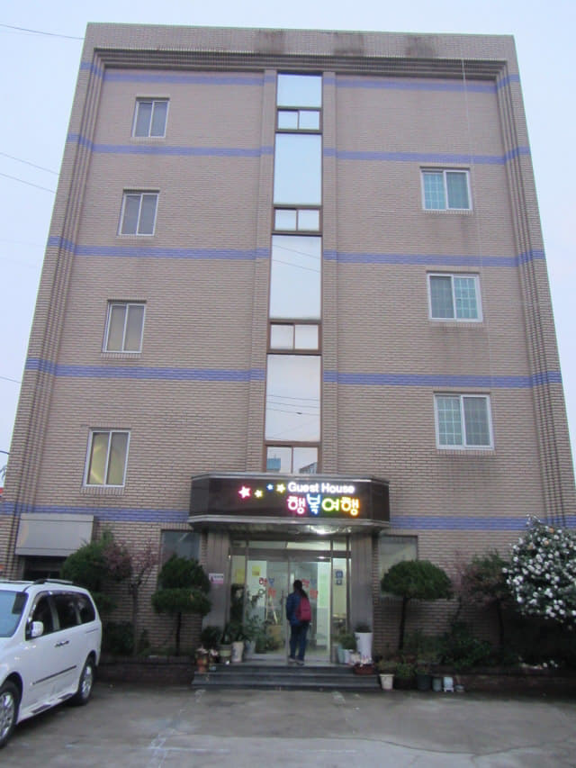

離開順天綜合巴士客運站, 經過順天下集市, 穿過橫躺順天東川兩岸的豐得橋, 這時雨越下越大, 行人道也已經水浸, 便有收起相機慢慢向前走往賓館。來到順天火車站對面的 NH Bank, 轉右沿小巷走了一會, 一座樸素的五層高大樓就在左邊閃出, 看看門前的招牌, 只看懂 Guest House 這兩個英文字, 心想這裡便是 Suncheon Guesthouse Happy Tour (逍遙遊順天賓館)了! Suncheon Guesthouse Happy Tour [看價錢], 每晚房租不到港幣二百八十元, 而且還包括早餐!以這樣的價錢, 絕對是超值的。
因當時下著傾盆大雨, 無法拍照, 這照片是明天黃昏補拍的。

推門進入賓館, 賓館女主人馬上走出來迎接我們, 看看賓館的環境, 感覺就是一間比較現代化的民宿。在一樓服務台辦理了入住手續, 付了四晚房租, 便沿樓梯往二樓房間, 擺設比木浦的 Ekonomy 還要簡潔, 不過十分清潔, 尚算寬敞。

在房間安置好行李, 稍休一會, 於下午五時再走出賓館, 準備往順天下集市的「超熱情 도사식당 餐館」探望我們在上次秋天旅程認識的朋友, 順便在那裡吃晚飯。
賓館走廊外的公用冰箱、飲水機及毛巾回收籃。我們剛剛買的草莓也是放在冰箱內, 但記得寫上自己的姓名。
樓梯中間有旅客留言及記名板。當記名板寫滿了, 再不可以容納更多簽名或留言時, 一般的做法是全部擦掉, 重新再來; 但順天 Guesthouse Happy Tour 賓館卻十分聰明, 會將名板的所有簽名留言拍攝下來, 製作成一幅細圖, 貼在記名板兩邊, 這樣, 所有旅客簽名及留言記錄便可以完整的保留下來, 所以假如你們也有機會來順天 Guesthouse Happy Tour 留宿的話, 便會看到我們的留言。
Suncheon Guesthouse Happy Tour 一樓服務處及餐廳, 我們接著的四天就是在這裡用早餐, 很親切隨便的, 就好像在家吃早餐一樣。